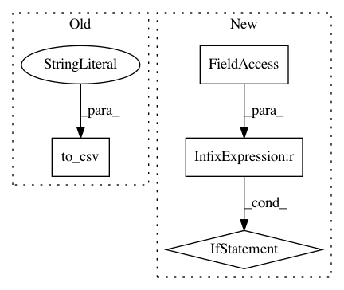

d39d8a845c486869b66ce755a6b634d8ed83c2af,pynets/fmri/clustools.py,NilParcellate,parcellate,#NilParcellate#,477
Before Change
confounds_nonan = confounds.apply(lambda x: x.fillna(x.mean()), axis=0)
os.makedirs("%s%s" % (self.dir_path, "/confounds_tmp"), exist_ok=True)
conf_corr = "%s%s%s%s" % (self.dir_path, "/confounds_tmp/confounds_mean_corrected_", run_uuid, ".tsv")
confounds_nonan.to_csv(conf_corr, sep="\t")
self.clust_est.fit(self.func_img, confounds=conf_corr)
else:
self.clust_est.fit(self.func_img, confounds=self.conf)
else:
After Change
start = time.time()
if self.local_corr != "allcorr":
if not os.path.isfile(self.local_conn_mat_path):
raise FileNotFoundError("File containing sparse matrix of local connectivity structure not found.")
self.clust_est = Parcellations(method=self.clust_type, standardize=self.standardize, detrend=self.detrending,
n_parcels=int(self.k), mask=self.clust_mask_corr_img,
connectivity=self.local_conn)
In pattern: SUPERPATTERN
Frequency: 4
Non-data size: 4
Instances
Project Name: dPys/PyNets
Commit Name: d39d8a845c486869b66ce755a6b634d8ed83c2af
Time: 2019-11-21
Author: dpisner@utexas.edu
File Name: pynets/fmri/clustools.py
Class Name: NilParcellate
Method Name: parcellate
Project Name: freelunchtheorem/Conditional_Density_Estimation
Commit Name: 962d656e0063a5ef9c0d6463e168d5ef1914ff56
Time: 2018-03-26
Author: f4bio.ferreira@gmail.com
File Name: cde/utils/io.py
Class Name:
Method Name: append_result_to_csv
Project Name: okfn-brasil/serenata-de-amor
Commit Name: d5b67dee6fe4630c79424deb87f587f616eba02d
Time: 2016-11-26
Author: filipelinhares@outlook.com
File Name: src/fetch_yelp_info.py
Class Name:
Method Name:
Project Name: ANSSI-FR/SecuML
Commit Name: 42d0ac6260a5dd15bf86e49aa1b30ca8fcadc6c2
Time: 2019-05-17
Author: anael.beaugnon@ssi.gouv.fr
File Name: secuml/core/classif/monitoring/interp/coeff.py
Class Name: Coefficients
Method Name: display